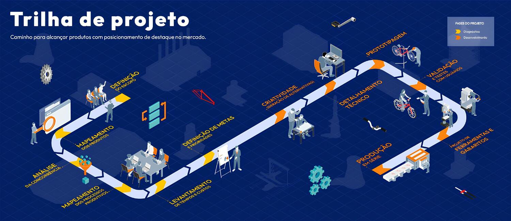

COMO DESENVOLVEMOS NOSSOS PROJETOS?
Nossa missão é desenvolver produtos eletrônicos inovadores que melhorem a vida das pessoas e impulsionem a indústria.
NOSSOS PROJETOS E CONSULTORIAS
Consultoria para testes de certificação INMETRO em equipamento médico, realizada no INPE (Instituto Nacional de Pesquisas Espaciais) em São José dos Campos.
Design de uma bomba de infusão, que visa controlar a aplicação de fármacos de maneira uniforme, permitindo assim o usuário ter um controle extremamente preciso sobre volume injetado e seus horários de aplicação. Imagem demonstra a parte inicial do Projeto.
Nesse projeto já abordamos desenvolvimento de placas de circuito impresso e toda a estrutura elétrica do maquinário. Sendo seu ponto de destaque os dois motores Brushless com fusos, para uso com seringas.
Desenvolvimento de Placa de circuito impresso, a imagem aborda o Layout da placa que foi estruturado utilizando o programa CAD.
Montagem e testes de uma bomba centrífuga para o uso em cirurgías cardíacas.
A imagem mostra o teste piloto da Bomba Injetora de Meios de Contraste, buscando validar seu funcionamento e praticidade. O projeto consiste em duas partes: um controle remoto na sala de operações do tomógrafo e a própria bomba ao lado do paciente durante o exame. Isso permite a administração precisa do contraste conforme programado.